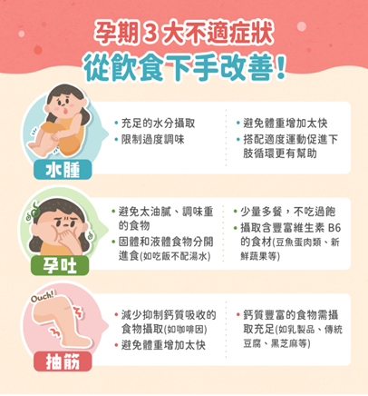

每位爸媽總是想給寶寶最好的，在得知懷孕之後總是小心翼翼，希望寶寶能夠健康平安長大。不過在懷孕期間的生理變化或不當的飲食習慣，常會有孕期不適的狀況，卻讓人身心俱疲。以下來看看為什麼孕婦會容易孕吐、水腫和抽筋，在飲食上，有什麼能緩解的方法呢？ |
| |
| 孕吐
|
| 原因： |
| 懷孕期間因為體內賀爾蒙變化，可能引起噁心嘔吐等不舒服的情況，且懷孕初期黃體素分泌增加，為了給寶寶更穩定的環境，子宮平滑肌收縮減少，連帶影響腸胃平滑肌收縮減少，容易消化不良。這時候如果媽媽心理過度緊張焦慮，也會造成身體不舒服。另外，也有研究認為孕吐是寶寶保護自己的機制，因為容易引發孕吐的氣味，包含味道較重的植物和較油膩的肉類，其代謝物可能造成胎兒危害的機率較高，因此可能也是寶寶自保的訊號。 |
| 改善建議： |
1.避免油炸或過於油膩的飲食及調味過重的食物
2.固體和液體食物分開進食，例如吃飯不配湯或水
3.少量多餐，不吃過飽
4.攝取含豐富維生素B6食材，如豆魚蛋肉類及新鮮蔬果 |
|
| |
| 抽筋 |
| 原因： |
| 在懷孕期間，因應胎兒骨骼成長，鈣質的需求增加，加上飲食上鈣攝取不足，攝取過量咖啡因、草酸、高蛋白質或高鈉飲食抑制鈣質吸收，容易會因為缺鈣而導致抽筋。不過缺鈣也不是唯一的原因，懷孕中後期體重增加快速，腿部肌肉疲勞、活動量過多或不足，都可能是缺鈣的原因。 |
| 改善建議： |
1.攝取足夠鈣質豐富的食物，如：乳製品、小方豆干、傳統豆腐、黑芝麻等等
2.適當限制咖啡因等抑制鈣質吸收的食物
3.避免體重過度快速增加
備註：體重增加建議為懷孕12週後，原體重過輕者，每週增重0.5公斤；原體重正常者，每週增 重0.4公斤；原體重過重者，每週增重0.3公斤。整個孕期增重10-14公斤為理想
範圍。 |
|
| |
| 水腫 |
| 原因： |
| 懷孕賀爾蒙影響，體內水分增加，增加的水分分布在血管內或組織間隙當中，但血管收縮力下降，造成水分滯留，加上胎兒壓迫到下肢及骨盆腔靜脈，使下肢及骨盆的血液循環變差，因而造成水腫。通常水腫出現於懷孕後期的下肢，若是在懷孕前期就出現水腫或不侷限於下肢，並有其他合併不適症狀，可能是病理性的水腫，建議及早就醫檢查。 |
| 改善建議： |
1.避免體重過度快速增加
2.限制過度調味
3.足夠水分攝取，並不是水腫就不能喝水，反而要喝夠水
4.適度維持運動促進下肢循環 |
|
|  |
除了以上這些生理上的不適，許多媽媽們在心理上也可能出現焦慮、憂鬱的情形，因此身邊的伴侶與親友們記得多多陪伴、給予關心，幫助準媽媽們一起面對迎接新生命的挑戰！ |
| |
資料來源
媽咪孕期不適怎麼辦？孕吐、水腫、抽筋應該這樣吃！ - Heho親子
|

 月號－哺乳育嬰站
月號－哺乳育嬰站